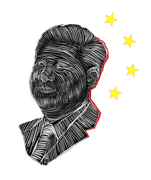

WHY CHINA WILL INEVITABLY BECOME THE NEW 'SUPERPOWER'
ANDRÉ NUSSBAUMER JUNE 2021


WHY CHINA WILL INEVITABLY BECOME THE NEW 'SUPERPOWER'
ANDRÉ NUSSBAUMER JUNE 2021

In my perspective, China will become a superpower because of its philosophy. I think that technology has brought to light what the U.S wished was kept in the dark, such as all the atrocities committed throughout the globe and the ravaging of this diverse world for an imposed neoliberal world order, which is what we, in the so called first worlds are living under now. This played an important role in people losing faith in this economic system. Made us think, is that what we really want to be? Where we want to be? Is that the price to pay for being regarded as paramount? People understood that for the majority of us, normal people who want to live a peaceful life in a peaceful world, it wasn't worth. This reality clash affected the country as a whole and divided it, and the unquestionable democracy started to raise serious questions.
Why is our infrastructure so underdeveloped in such a rich country? Are we the one's benefiting from this system or only a few?
China on the other hand has been doing what developed beings should've started a long time ago. Acting honorably, with values. Cooperating. Focusing on building the utopic world their philosophy spoken of. This is the type of world you want to live in, a universal brotherhood of man sharing knowledge . Those are the type of leaders you want to look up to. The one's that bring hope to mankind. Right now there's a lot of misinformation concerning China, because, our leaders don't want you to know that Socialism actually works, and not only it works, but in fact is the most healthy way for a society to organize itself. To thrive. Balance is the key, and through an almost political feng shui, China is showing the rest of the world that collectivism is better than individualism. That together we can achieve better things. Putting the citizens first is what ends up building a strong nation, because an individual doesn't make a nation, a nation is made of millions of individuals. In the end the good actions and a good mindset will overcome bad actions and a bad mindset. Doesn't matter how long it takes, everything will one way or another see the light of day. But, as I said before, peace isn't profitable, especially for people who live in a constant war against themselves. Against their brothers. Against all that's good in each and every one of us. Traitors of mankind's idealistic nature. This philosophy can be seen by how they carry themselves, yes, they are acquiring a lot of industries, but at the same time they help develop the places where such industries are located. They act as a symbiote and not as a parasite. This is empathy. Their secular philosophy consisting in Confucius teachings, and the Dao, are a light at the end of the tunnel. Obviously, I don't take for granted any side. I'm skeptical about everything, but I always keep an open minded. For instance, in a more darker note, one can say they've studied the art of war, when one doesn't conquer countries from the outside, but from the inside. Taking control of the means of production might be seen as taking control of a country. If you control the production, one can say that you have control over a country. It's all about perception, it always has been. I like to believe that there's hope. That in the end, goodness will prevail, and the malice done throughout centuries will be exposed and will bite those who keep pushing such agenda. We see the world as a reflection of who we are, if our intentions are ill, then we'll think others could only have ill intentions. If we are mean and belligerent we'd think it's only natural for others to be that way. They were a colonized country so they carry not only a greater responsibility but maybe empathy towards those who've been through what they've been through. Once again, we see the world through everything we are. Our mind act like lenses, if it's dirty, it will see dirt all around, and expect nothing but the worst. This is why I say China is so important, not only economically but ideologically, as a fundamental step stone into the future which the people are, deep inside, craving for. While some divide and conquer, others unite and prosper. I say, may China teach some moral valuable lessons to the West.This God forsaken place is in a desperate need of competent leaders that will place human sanctity above currency. Only a Communist country is able to do that, because Capitalist countries only care for money. May China bring hope and light to a rather hopeless and dark world. May their fireworks light the path towards the future mankind deserves.